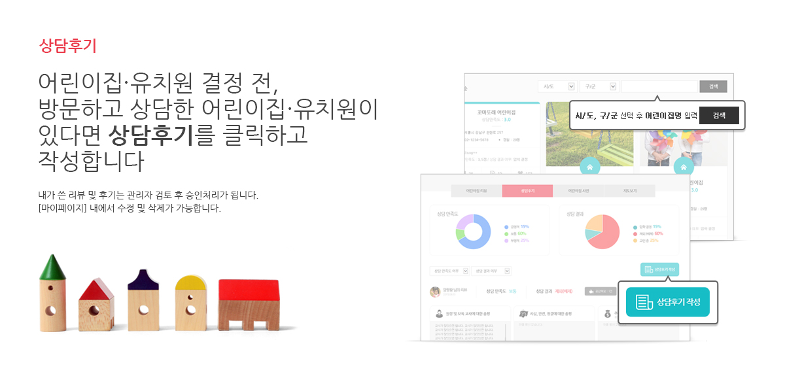

간단한 회원가입 사용법 1 사용법 2 사용법 3 사용법 4 사용법 5 사용법 6 사용법 7 어린이집명 검색 사용법 1 사용법 2 사용법 3 사용법 4 사용법 5 사용법 6 사용법 7 리뷰쓰기 사용법 1 사용법 2 사용법 3 사용법 4 사용법 5 사용법 6 사용법 7 상담후기  사용법 1 사용법 2 사용법 3 사용법 4 사용법 5 사용법 6 사용법 7 고수맘 이야기 사용법 1 사용법 2 사용법 3 사용법 4 사용법 5 사용법 6 사용법 7 마이페이지 사용법 1 사용법 2 사용법 3 사용법 4 사용법 5 사용법 6 사용법 7 고수맘의 생생Talk 사용법 1 사용법 2 사용법 3 사용법 4 사용법 5 사용법 6 사용법 7